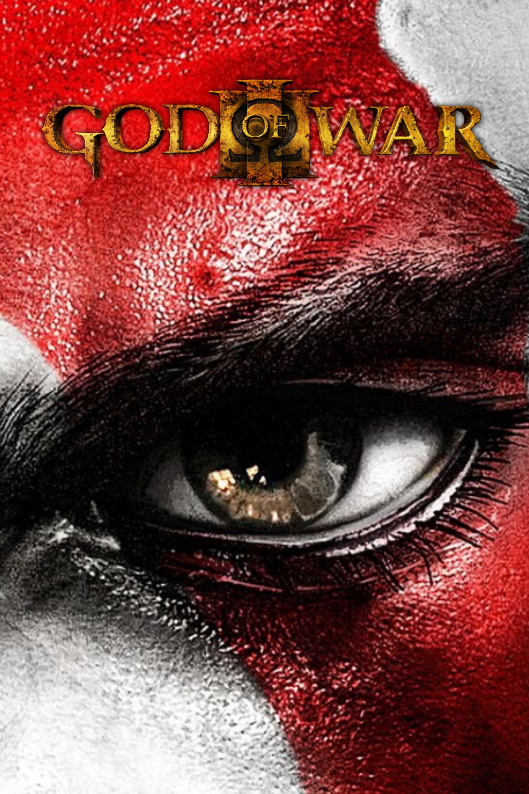
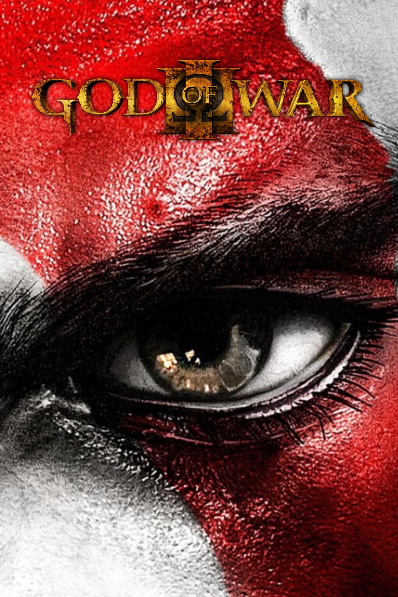

Kiadás, főbb tudnivalók
Az első God of War játék 2005-ben jelent meg Playstation 2-re.
A God of War egy akció-kaland hack and slash videojáték, amelyet a Santa Monica Studio fejlesztett és a Sony Computer Entertainment (SCE) adott ki.
A játék a görög mitológián alapul és ott is játszódik(pl: Athén). A játékos irányítja a főszereplő Kratost , egy spártai harcost, aki az Olimpiai isteneket szolgálja.
A játék központi motívuma a bosszú.
A történetet többnyire visszaemlékezésben mesélik el, miután egy jelenetet foglal magában, amelyben Kratos Görögország legmagasabb szikla tetején áll, és azon siránkozik, hogy az istenek elhagyták őt, majd beleveti magát a lenti vizekbe. Míg a játékos három héttel az esemény előtt elkezdi a játékot, Kratos hátterét a Narrátor meséli el a játék során ( a God of War II -ben kiderült, hogy Titan Gaia ). Kratos félelmetes spártai harcos volt, és egy félisten emberfeletti istenszerű erőkkel és képességekkel (bár ő maga nincs tisztában az örökségével, mivel a God of War II -ig nem tudja, hogy apja Zeusz ), ötvenfős csapatát stratégia, taktika, vadság és hódítás révén ezres hadsereggé növesztette. Egy barbár horda elleni csatában azonban seregét lemészárolták, és kétségbeesett módon Kratos életét és szolgálatát ajánlotta felAres , a háború istene, cserébe azért, hogy Ares legyőzze a barbárokat . Ares, érezve a hatalmas hatalmat Kratosban, elfogadta ajánlatát, és megsemmisítette a barbárokat. Megadta Kratosnak a Káosz pengéit is, a Hádész gödreiben kovácsolt ívelt pengéket , amelyeket hosszú láncokhoz erősítettek, amelyeket Kratos karjaihoz erősítettek.